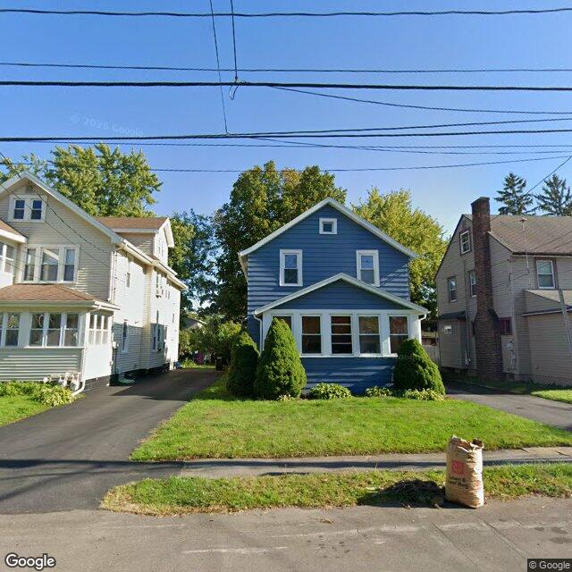

Property entry
816 Cadillac St
Published 2026-09-26T07:02:59+00:00
Parcel key: 004-18-030

City records
Matches use parcel IDs, normalized addresses, or nearby coordinates. Confirm a match against the source record before relying on it. Publication dates are not source-data dates.
Vacant properties 0
No matches stored for this feed. The feed or address matching may be incomplete; this is not confirmation that no records exist.
Rental registry 0
No matches stored for this feed. The feed or address matching may be incomplete; this is not confirmation that no records exist.
Code violations 0
No matches stored for this feed. The feed or address matching may be incomplete; this is not confirmation that no records exist.
Unfit properties 0
No matches stored for this feed. The feed or address matching may be incomplete; this is not confirmation that no records exist.
AI image observations (unverified)
These observations are generated from an image, not an inspection or an official code finding. No human verification is recorded here.
Image capture date: Not recorded. The entry publication date does not establish the age of the image.
Automated image description
{ "summary": "The visible exterior of the property appears to be a two-story residence with blue siding, a front enclosed porch, and a maintained lawn.", "property_type_guess": "single_family", "visible_conditions": [ "The structure is a two-story house with blue siding and white trim.", "A front enclosed porch or sunroom is visible.", "The roof appears to be dark-colored, possibly asphalt shingles.", "The lawn is mowed and appears generally maintained.", "Two trimmed conical evergreen shrubs are present in front of the house.", "A paved driveway is visible on the left side of the property.", "A brown paper bag, possibly containing yard waste, is visible near the curb." の部分", "condition_scores": { "roof": "good", "siding_or_facade": "good", "windows_doors": "good", "porch_or_entry": "good", "yard_or_lot": "good", "trash_debris": "none_visible", "vegetation_overgrowth": "none_visible" }, "visible_flags": { "boarded_windows_or_doors": "no", "fire_damage_visible": "no", "structural_damage_visible": "no", "vacancy_signs_visible": "no", "active_construction_visible": "no" }, "possible_unrecorded_issues": [], "image_annotations": [], "needs_human_review": "false", "confidence": "high", "caveats": [] }
Property type guess: unclear
Visible conditions
- No items reported.
Condition scores
No structured condition scores available.
Visible flags
No structured visible flags available.
Possible image-only flags
- No items reported.
AI review boxes
- No items reported.
Review reasons
- No items reported.
Image quality
- Available
- True
- Bytes
- 92136
- Needs Rerun
- False
ACS tract context
Census Tract 3; Onondaga County; New York
- Total population
- 1606
- Median household income
- 74716
- Poverty rate
- 18.7
- Housing units
- 708
- Vacancy rate
- 6.6
- Renter-occupied share
- 64.3
- Median gross rent
- 110100
OpenStreetMap nearby
meter search radius
OpenStreetMap lookup failed: HTTP Error 406: Not Acceptable